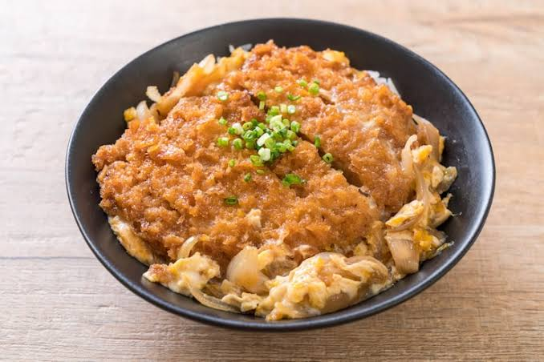

Katsudon is a popular Japanese donburi (rice bowl dish) made with a crispy, deep-fried pork cutlet (tonkatsu) that is simmered in a sweet-and-savory dashi, soy sauce, and mirin broth with onions, then bound together with softly set beaten egg and served over steamed white rice.
Add the water and dashi packet to a pot and bring to a boil. Reduce to a simmer. After a few minutes, discard the packet.
Thinly cut the onion and green onions/scallions.
Crack the eggs into a small bowl and beat with chopsticks until uniform in color. Cut each cutlet into 1-inch-thick slices with a knife.
Add the sliced onions to a large skillet, then the dashi broth. Cover the pan, turn on the stove to medium heat, and cook until almost translucent.
Add the sugar, mirin, and soy sauce and mix to combine. Place the cutlets on the onion. Cover and cook briefly until warmed through.
Pour the beaten eggs over the warmed cutlets. Cover and cook until the eggs are just set.
Divide the rice into bowls and top each with the cutlets and onion mixture. Optionally, drizzle with extra broth and garnish with scallions (or chopped mitsuba, if you have it).